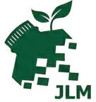
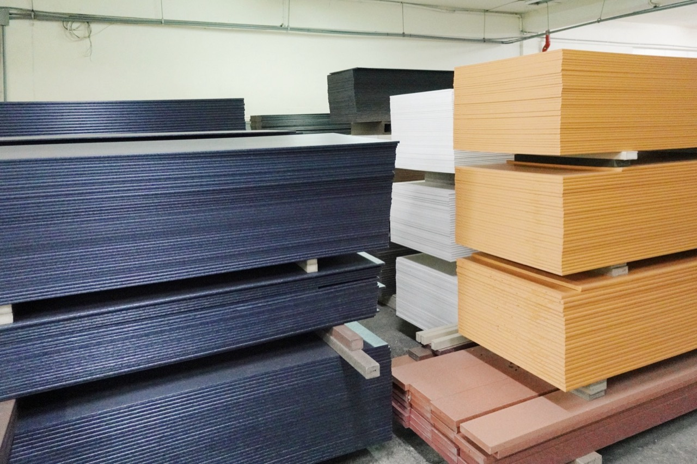

板材
適合討論家具板件、展示面、箱體與裁切零件。先確認厚度、外形與接合需求。

JLMRECYCLED BOARDS / MATERIAL SUPPLY
尋找再生板材供應商，除了看外觀，也需要確認板厚、斷面與加工方式。捷綠盟提供捷綠木板材、角材與襯板，讓空間設計與產品製作從用途開始選材。
提出選材需求 ↗閱讀產品目錄 ↗
適合討論家具板件、展示面、箱體與裁切零件。先確認厚度、外形與接合需求。
依斷面討論框架、格柵與配置構件。支撐、荷重與固定條件需依專案核對。
依牆面、外飾面及轉角需求討論排列、接縫與端部細節。
| 選材項目 | 原型錄列示 | 採購前確認 |
|---|---|---|
| 板材厚度 | 7.9、9、12、15、19 mm | 用途、加工及現行供應規格 |
| 板材寬度 | 450、600 mm，依厚度與型號不同 | 實際型號、可用尺寸與裁切排版 |
| 長度 | 依型號洽詢 | 原資料有不同版本，報價時確認正式長度 |
| 外觀 | 灰、白、淺咖、深咖、黑；另有木紋押花效果 | 色系、表面效果與批次分開確認 |
以上整理自原型錄，現貨、數量、公差與可供尺寸依公司確認；不同表面與斷面不以照片直接配對型號。
從外牆、廊下、露臺或室內板件提出材料需求；建築結構及整體工程另確認。
把面材、支撐、固定、收邊與排水一起討論，避免只詢問單一板件。
提供平面配置或零件圖，討論板厚、裁切、孔位與接合。
請提供用途與室內外環境、系列或型號、長寬厚、預估數量、色系及表面、加工圖面、交貨地點與預計時程。已有舊產品或樣件時，可附照片與尺寸。
可提出材料採購需求；現貨、訂購數量、可供尺寸與交付條件依產品確認。
可以。請附圖面、尺寸、用途及數量，再評估加工可行性、公差與報價。
不能僅依材質名稱替換。跨距、荷重、支架、固定與使用環境需由相關專業人員評估。